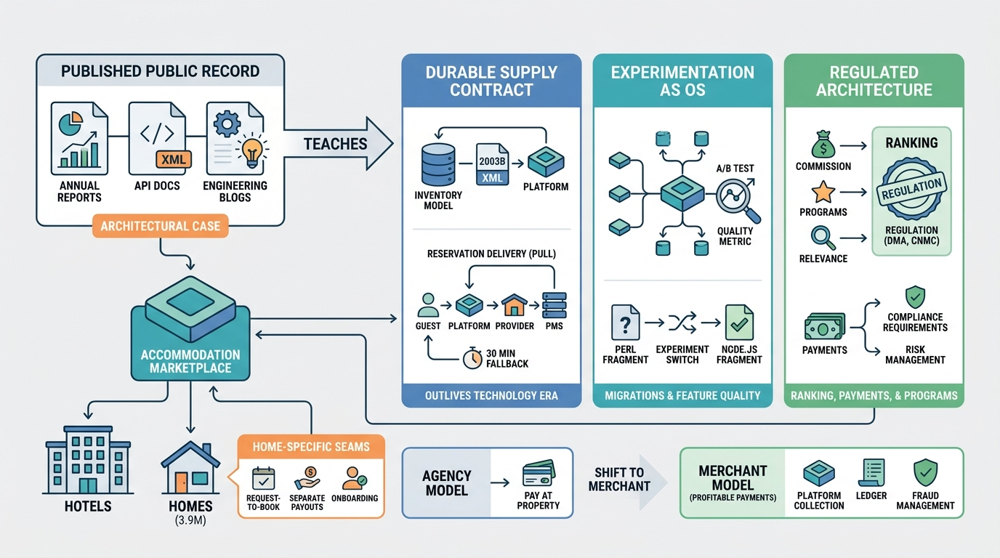

Part X — PRACTICE: How Others Built It
Booking.com: Experimentation, Connectivity and the Agency Model at Scale

Image generated by Google Gemini (gemini-3-pro-image-preview)
Part X — PRACTICE: How Others Built It

Image generated by Google Gemini (gemini-3-pro-image-preview)